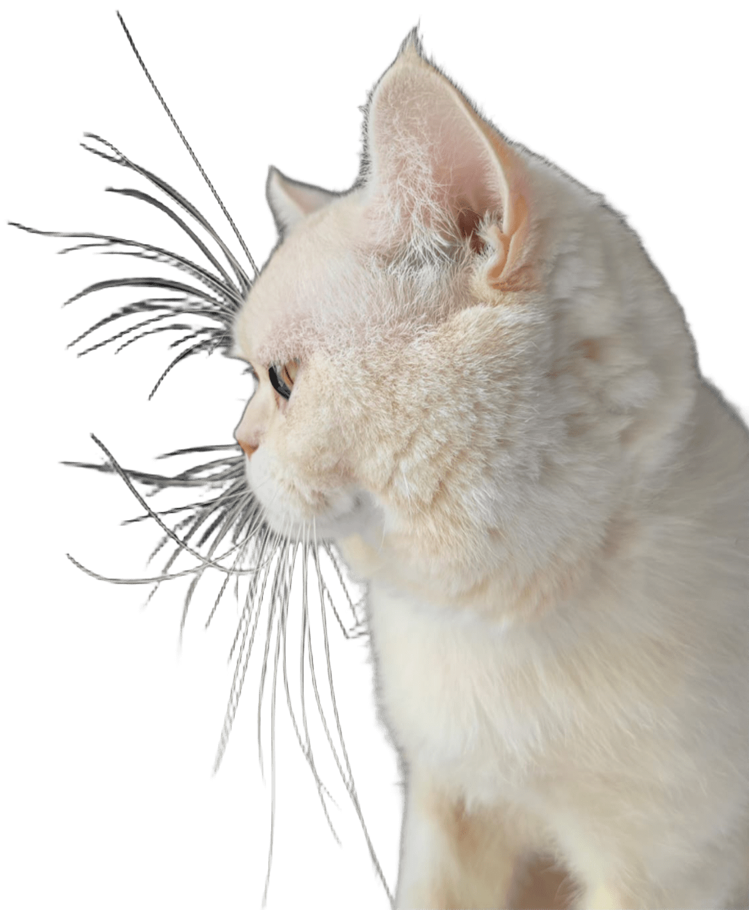

Retail Bulletin Photo &
Drawing Contest
You will cast votes for two contests published in our Retail Bulletin.
First the Photo Contest, then the Drawing Contest.
You may select up to 5 entries per category. Voting is anonymous.
After completing both steps, the Live Results page will show total votes
for Photo and Drawing separately.
Start Voting
Step 1: Photo
Step 2: Drawing
Step 3: Results

Created by Aslı Demirelli